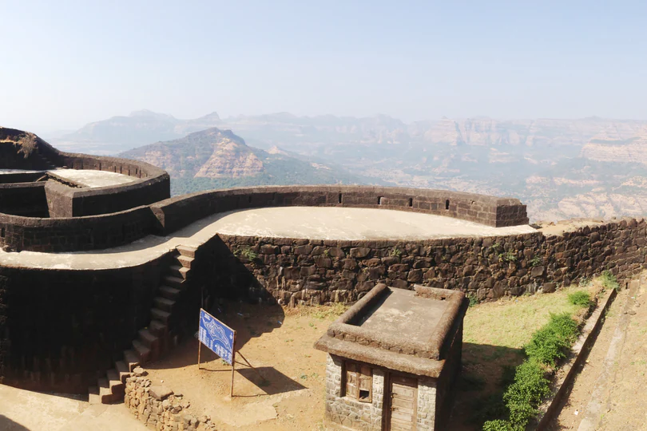
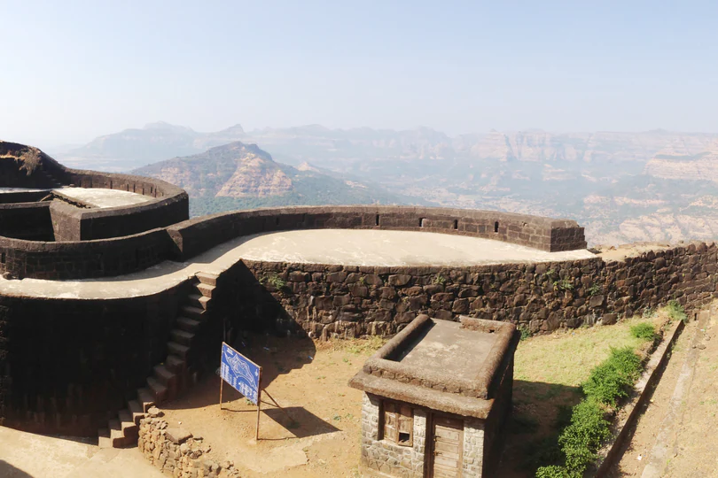
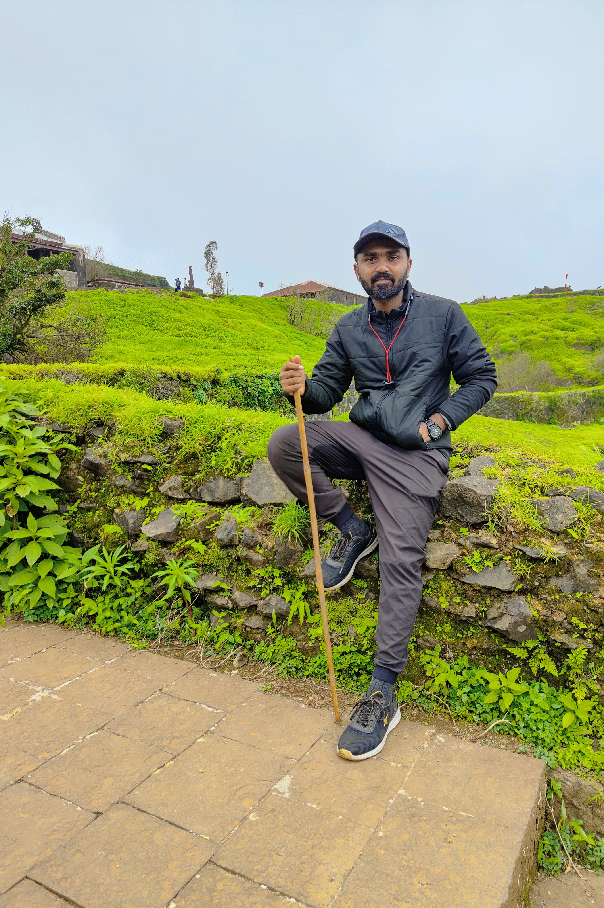
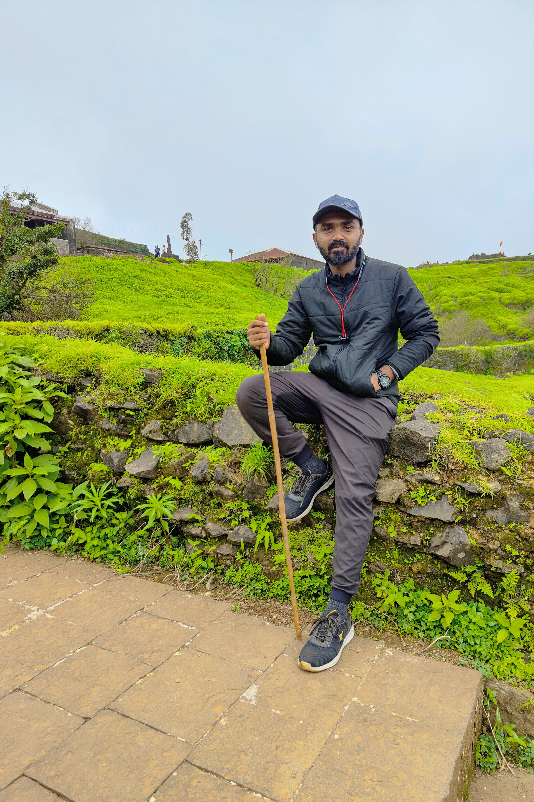

Pratapgad
Pratapgad is a hill fort in Maharashtra. Situated close to the famous hill station of Mahabaleshwar in the district of Satara, the citadel rises to an elevation of about 3500 feet from the ground.
Pratapgad fort Trek, Mahabaleshwar Overview :
Much of the fortifications are still intact, and the fort is a popular tourist destination. There are four lakes within the fort, many of which overflow during the monsoons. There is a watchtower just beside the Mahadarwaza, or the main entrance, at the end of the motorable road. There is a statue of Shivaji Maharaj in his full glory, which was installed about 60 years ago. There is a Bhawani temple at the top of the fort, and a cultural library showcasing the heritage of the fort. There is a handicrafts centre en route to Pratapgad from the base village, which draws a lot of tourists.
History
Rajgad, literally meaning 'Ruling Fort was content ital of the Maratha Empire established by Chhatrapati Shivaji Maharaj for 24 years. Rajgad is divided into two main parts as the lower fort and the upper fort. The upper fort comprises the Balekilla, where the royal residence was built. The Lower fort is made of three arms of the hill. Rajgad is located on the triangular tabletop of the hill. These three arms are named Suvela Machi, Padmavati Machi and Sanjivani Machi. Padmavati Machi got its name from the temple of Goddess Padmavati and the small reservoir of the same name. Numerous structural remains and plinths of the palaces and houses can be seen here. There are remains of the office of the Maratha empire and the marketplace. This fort was the home of Chhatrapati Shivaj Maharaj. It has witnessed different phases of his life, from the young sixteen-year-old Shivaji constructing the fort to becoming a King. The young sixteen-year-old Shivaji had captured the Torna fort and had found a gold hoard. The gold found in the hoard was used to build a fort on Murrumba Devacha Dongar, and the fort was then named Rajgad'. This fort was then the capital of the Marathas which housed and protected the King and his soldiers for many years.
Gallary


 

 
